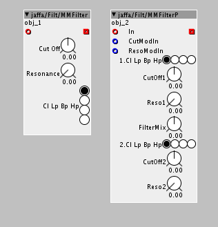
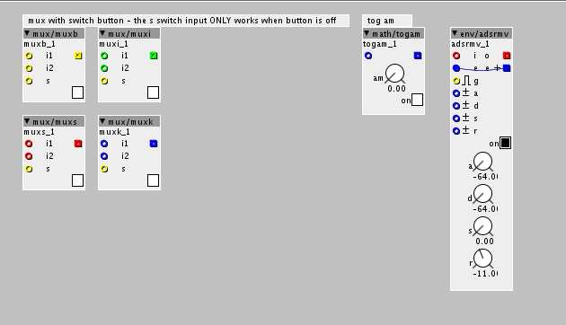
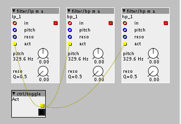
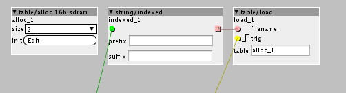
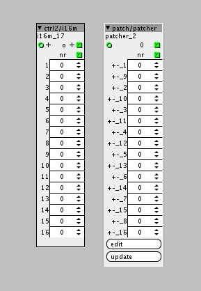
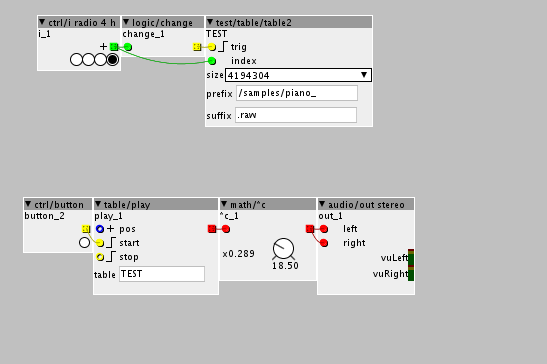

Here are my contributions 
Jaffasplaffas contributions
jaffasplaffa
#2
Controller 0bjects:
A bunch of different integer control objects, with different values, like 0-6, 1-4, 1-8. etc.. lots of them for almost any purpose 
They do look much bigger than the original one. That is cause the name of the object dictates the size of it. You can copy them to your own local harddisc(assuming filepatch/name is shorter than from com.lib.) and the size of them will drop to normal size. There are a lot more than on the picture, they all look the same. So I only pictured a few of them.
{kind=link}
jaffasplaffa
#3
Filters:
A couple of multimode filters. These are subpatches, that you can edit to taste.

jaffasplaffa
#4
Sequencers:
A bunch of sequencers with build in displays. Enjoy 
Update: The sequencers that is not sending pulse(the regular ones) now also has got displays.
{kind=link}
jaffasplaffa
#5
Table/read int integer version:
Reads from table. Outputs an integer value, often very high, so it needs to be scaled a bit.
For scaling: Connect a div256 and a div8 to the integer table's output.
This scales the output value this way:
If a fractional table would output 17, the integer table output approximatly 17000.
If a fractional table would output 24, the integer table output approximatly 24000.
And so on....
{kind=link}
jaffasplaffa
#6
A few new objects:
Muxers with 2 inputs and on/off buttons. on/off input only works if on/off button is off.
Tog amount object. It has got an amount knob and an on/off button.
Adsr envelope with build in vca and on/off button. If off input will be passed through with no effect from the envelope. NB! You HAVE to connect "e" out to "e" in to make it work. I have not learned how to do this internally in the object yet. Still learning

jaffasplaffa
#7
I have just added a wavetable creator patch that I have been working on for a while to the community library.
You can create and save to sd-card and recall wavetables of 128 waves of 2048 samples each = 262144 samples. (These are importable into Serum, since it uses same size for each wave as Serum(2048 samples)).
There is an instruction on how to get started inside the patch.
HAVE FUN
WTCREATOR 128 WAVES:
{kind=link}
Feel free to ask any questions!
UPDATE: The old version had several local objects included, so the patch wouldnt work for everyone. I have now embedded all objects that is not in the com.lib., so it should now work for everyone...... Sorry 'bout that!
Wavetables.....Again..... How do I playback only 1 cycle of a wavetable?
jaffasplaffa
#8
Factory library filters lp m, bp m & hp m modded with active inlets, which turns some of the code of the objects on & off. For example in a multi mode filter setup with BP LP HP, you can save a few percentage of DSP by only having the filter used active.

jaffasplaffa
#9
table2:
A combination of 3 objects:
table/alloc 16b sdram
table/load
string/indexed
IMPORTANT:
Se help file or picture about how to connect!
{kind=link}
thetechnobear
#10
why are you connecting the outlet, back to its own inlet ?
you can also ditch the init if your not using it, also its 'normal' to use the object name as the table name.... you can get this within the object if you need it for your code
jaffasplaffa
#11
Because I dont know how to do that internally. Any suggestions are welcome. I have asked about this before, but as far as i remember @Sputnki was the only one commenting on it and he told me it was really hard to do that kind of routing internally. And I haven't found any objects from com.lib or fac.lib. that has got internal routing like that. So I decided just to do it like this. If there are objects that does it could you point me in the direction? Or if you know how to do it internally, I'd love your feedback, I'd love go get rid of the beige inlet & the outlet. I put it in com.lib., take it form there if you want to help out. I have a bunch of other objects where I used the same method, so it would be most welcome to get this routing method sorted. Basically the beige cable is the same as you see on this picture.... It is the output of the string index, routed to input of table/load.

I have been looking a bit into how to do it internally. I looked in a subpatch .axs object...... and I see the "nets" function is used to connect objects within a subpatch. I wonder if this could be used internally, the "nets" function? Looking into it anyway.
Ok, I'll try that, I just copied from original table/alloc module and it had that "init" thing included. Ill remove it.
Yeah it is semi normal, but usually the name is called from another object NOT the same object, so I think it is necessary to make the user aware of that. For example table/load uses the name of table/alloc SDRAM...... It is different than every other community library object. Id love to get ride of the name calling too. If there is a fac.lib. object that does this, could you point me in the direction? Or give a helping hand?
Thanks
thetechnobear
#12
look in the code for the inlet_filename, essentially you just need to replace this with the code that is being used to generate the outlet...in this particular case, basically the char ptr 'c'.
(ok its a little more involved than that, but that the essence of what needs to be done, the rest is just 'syntax'  )
)
init, just remove the attribute, and then the reference to attr_init
attr_table... I dont understand your point...
but you dont need it... the code refers only to attr_table because normally its in another object, so it needs a reference to it, but here the data you require is already within the same object - so you can access it directly.
generally, when combining objects like this (or generally taking code from factory object etc), is just a starting point. I do this sometimes, under the guise of 'code reuse', but the trick is to remove all 'internal' connections... this is done by replacing variables/attributes , there is no need to use the network, as this is only used to connect between objects... but you are not doing that, your connecting code within one object. even once this is done, its pretty normal to want to then alter the code to make it work more 'logically' for your needs.
this object does raise one interesting question... and that is why not implement as a sub-patch...
(generally, if its just combining objects, this is the preferred method)
Im assuming this is down to the attributes? and table name? the latter is not a big issue, but it would be useful to allow attributes to be be 'put on parent' for this use-case.
jaffasplaffa
#13
I'll experiment wit that tonight, thanks for the tip. I asked @Sputnki about how to do this for another object, this mixer:
{kind=link}
The "m" out to "m" in, I wantedto do that internally. Sputnki told me it is hard to do that internally, so I gave up on it...... For now.
But I think one of the issues is that when doing it internally, those in & outlets will be removed and therefor you cant use them to do the internal routing, it has to be done in a different way. And still have not seen any objects that has got that kind of routing internally. That is also why I am curious about the "nets" function(if it is a function, probably wrong word for it). When you have made a .axs and edit object definition, you'll see all the routings from object to object is done with "nets", and I and got curious about it. I dont know how to see the object definition of an object within Axoloti, so I use Textwrangler to open the .axs to see what is inside. When I push edit object definition on the subpatch inside Axoloti it just opens the subpatch, not the code. Textwragnler lets me see what is really going on.
Nets:
{kind=link}
Yeah, this I can do. I was just not sure if it was actually used for anything or if it would have an impact to remove it. Anyway, will give it a go.
Problem is if I do not name the attrib_table the same as the objects name, the patch wont go live, in same fashion if you dont name a normal table/load the same name as the table/alloc. As on the picture, where table/load calls the name of the table/alloc 16b sdram objects, which is alloc_1:
{kind=link}
On my object the objectname "TEST" is equivalent to the name of the table/alloc 16b sdram. And the attrib_table name is equivalent to table/loads name. These names HAS to be the same ot else it wont work. But yeah there probably is a way to do this internally too
This is really important stuff to learn. THANKS
Yes exactly, and I cant really find any examples of it in the community library, how to "serial connect" code. One thing goes into the other....
One thing is I want to keep things as clean as possible. Also I want to make things more efficient. I have made an object, the one on the picture:

The left one is my custom object. The right one is exactly the same, but made as a subpatch. On the subpatch I have set everything in setting to zero, presets, etc. to make the competition fair.
My test that I jut did I could load 36 of my custom object. But I could only load 31 of the subpatch version, before the CCMS ram was overloaded. That means that the custom object is around 14% more efficient than the subpatch version! This is pretty significant, keeping in mind that is is a very simple object. Here are the patches to test for yourself:
Ctrl TEST CUSTOM.axp (172.1 KB)
Ctrl TEST SUBPATCH.axp (259.0 KB)
Ok now after reveiewing the subpatch version I do see some cables going upwards. That might be some of the reason that the custom version is more efficient on the CCMS ram than subpatch version. Will test this too. But I just want to keep it simpler and not have to worry about cables etc. If it is hardcoded into the object, I dont need to worry about it.
I started using attributes more and more. Mostly because in many cases you want to set some fixed values that you dont want to touch anyway. Using attributes makes it very simple, cause you cant edit them when live. Kind of fixes the problem on its own and then use ctrl/.... for the stuff you want to edit when live.
Also but not least reason that I make these objects is learning. Starting to understand some of the language in coding on some of the webpages I find about coding. Small steps, but getting closer. And big thanks to anyones who helps out in this forum
jaffasplaffa
#14
First step fixed - INIT removed succesfully
Next is going to try to make the internal routing.
thetechnobear
#15
i cant test, as the subpatch example includes objects which are not in the community library.
the only way to see why this is more 'efficient' is to take a look at the generated source code, in xpatch.cpp. this should tell you what about the code is different... it could be just simply 'code repetition'...
you have to remember axoloti optimises for running performance NOT space, so it inlines a lot of code.
yes, because its the 'wrong question'... if you are combining objects, you don't need to 'connect them'.
i.e. if I want to combine object A and B into an object called C... then C contains the code from A and B, I'm not connecting A and B... so i take all the code that creates the output for A and just directly connect it to the code in B.
now heres the point... you can't do this 'blindly' , you need to do this with knowledge of what A and B do
take a couple of silly examples
A has an outlet int32 B has inlets int32,
A code
outlet_o = inlet_i >> 1;
B code
outlet_o = inlet_i >> 2;
so to combine for C (forgetting ,we can do it better)
C code
int32_t oa = inlet_i >> 1; // (this is inlet from A)
outlet_o = oa >> 2; // (outlet code from B)
easy... but thats because its a simple type...
but if you do it with audio buffers, then its an array (as are strings), so you have to iterate over it.
now with audio buffers often you can optimise, since by defaults you will have to iterate over the buffer twice but often when you look at the code, you can see you can combine the code, and only iterate over it once, i.e. do the 'merging' of the code at sample level not buffer level (which the inlets/outlets force)
similarly, you may find that when you look at 2 objects to combine, they will mess about scaling the data to conform to the unipolar/bipolar conventions, but you may not have to do this, when you combine the inlet to the outlet, and thereby save processing.
really its worth investing the time understanding the code.
one last point... bare in mind, when you take a 'snapshot' of the code from a couple of objects, if we change the factory object (e.g. fix a bug, make it more efficient) , you will not get that benefit.
your point about efficiency is important, Axoloti goal is that most users do not code objects ... as it dramatically cuts the user base. so if combining objects is gaining benefits, really we need to see why this is, and see if the code generation can be improved.... from your examples, I dont see any fundamental reason, why the code generator in axoloti cannot output as efficient code as your doing manually.
anyway, sorry, its a massive topic really... and pretty much begs as many questions as it answers
jaffasplaffa
#16
Ok, I thought I embedded them, sorry @thetechnobear . Here is the subpatch version with embedded objects and optimized order of execution, all cables going downwards. Now I can load 32, so optimizinf order of execution gave me 1 extra on subpatch version:
Ctrl TEST SUBPATCH 1.axp (775.4 KB)
But custom version still wins by 4
jaffasplaffa
#17
Is there examples of this in the factory library? That shows how A is connected directly to B? And how the code is actually separated into A, B & C? I understand things best with examples and then look at some text along. So if there are fac.lib. examples I'd love to check them out.
I really like to get the most out of Axoloti. I am not trying to prove anything, just trying to find out what is the most efficient way. If it is factory objects I will use factory objects, if it is custom objects i will use that
Thanks for the examples on A B C, I think I understood most of it But in your example doesnt the inlets and outlets have to be present on the object? Cause if they have to be present I'd rather connect something to them, or else it might be confusing with their presence.
thetechnobear
#18
the increase in CCSRAM I think is caused by because you are putting a lot of UI objects on a sub-patch and then promoting them to the parent, this seems to generate quite an extra bit of code... as the parent patch has to pass the data down to to sub-patch.
anyway, Id avoid putting so many parameters on things, parameters do (generally) have an overhead, they are not free.
jaffasplaffa
#19
But it is not an options to remove those parameters, cause I need them. Sorry these kind of arguments are a bit off! My method was, in this case, more efficient than factory objects, without a doubt.
It is almost like telling a guy who needs a car to drive 200 km a day to get to work to get a bicycle. That guy really needs the car and getting a bicycle would make no sense at all! I need 16 parameters and suggesting to avoid using so many subpatches when I need them, sorry, is really a bad suggestion! Maybe using a bicycle is better for the environment, but they guy will never get to work on the bicycle, he needs a car to do the job! Does that make sense? He is not trying to save the environment, he is trying to get to his job. Like I am not trying to use less that 16 parameters I am trying to make 16 parameters as efficient as possible. Do you see the difference between removing a feature to gain CCMS and optimizing the object, without removing anything? That is 2 completely different scenarios.
I hope you can see it. My point was, in this case, that a custom object was more efficient than patching it with up with factory objects, and it was. 36 pieces of same object is more efficient than 32! So again talking about avoiding to use something that I need, is not really an option.
And again this is a fairly simple object, there must be a lot more to gain on complicated objects. If you can patch it up with factory objects in a more efficient way, I am all ears, but so far I have proved my solution is more efficient, you havent proved anything about the claim that factory objects is as efficient as custom objects. again, make a version with factory version with the EXACT same features that is more efficient and I will use that instead.
I made the subpatch version as effective as possible, it reflects the EXACT same routings as the custom version and custom version is more efficient. I dont understand why you keep hanging to that argument, iI dont think the arguments are rational.
thetechnobear
#20
sorry, thats not what I meant... my own fault, as Ive not really had time to get into this, my answers have been pretty terse, so not very 'helpful'
anyway given its christmas, Ive made the changes to the object to show you what I meant.
I will point out, that the load object, that you have based this on is not a good example, it should not do file IO in the audio thread, this should be done in a separate thread, also its 'error handling' is not good.
BUT thats not really the point, this is merely to show you how I combined the objects, removing unnecessary elements. which was really was I was driving at on my original post (before going even more off-topic)
sorry, Ive not got any more time to go into this, but hopefully the example makes it clear enough.
(if you compare yours and mind side by side)

table2.axo (4.7 KB)
happy holidays
Mark